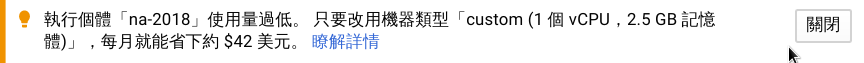
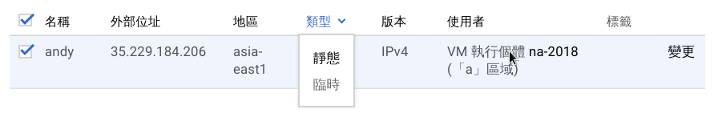
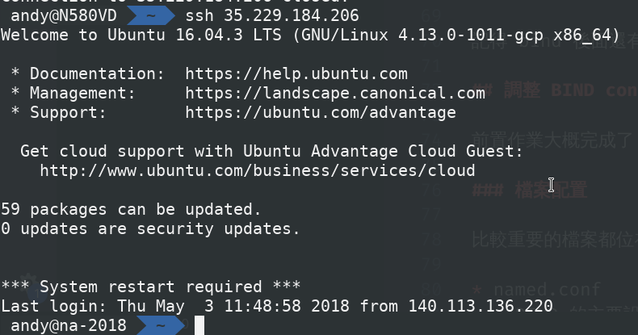

DNS Server
這次的 NA 作業，叫我們搭建一個 DNS Server，並要與另一個隊友搭配，在這裡把一些架設的細節記錄下來。
作業內容
主要還是需要有點團隊合作的作業
- 用 BIND 設置 DNS Server (20%)
- 讓自己的 DNS Server 提供服務 (exampleA.com)
- 讓隊友給你的 DNS Server 提供服務 (sub.exampleB.net)
- 把自己的 Sub domain 給隊友管理 (sub.exampleA.com)
- 從 Internet 可以 query 到 DNS Server 的資料 (e.g. workstations、140.113.235.1)
- Common (10%)
- 把 ws.sub.{teammate’s domain} CNAME 到 demo.sub.{teammate’s domain}
- 把自己 server 的 SSHFP record 加到 sub.{teammate’s domain}
- View (20%)
- 添加 ws.sub.{teammate’s domain} 的 A record
- 來自 bsd1-bsd4.cs.nctu.edu.tw 的 query 回應 140.113.235.131
- 來自 linux1-linux4.cs.nctu.edu.tw 的 query 回應 140.113.235.151
- 其他的 query 回應 not found
- Logging (10%)
- 把全部的 log 丟到 /var/log/named.log
- log rotate
- Security (15%)
- 只允許 隊友的IP、bsd1.cs.nctu.edu.tw、linux1.cs.nctu.edu.tw 做 AXFR request
- No recursion
- DNSSEC (15%)
- 在 sub.{teammate’s domain} 設置
- 信任鏈要弄好
- 把 sub.{your domain} 設成 slave (10%)
- 由隊友管理
- 同步更新
環境
租借 VPS
我和我的隊友都是用Google Cloud Platform(以下簡稱GCP)搭建
GCP第一次弄的話會送你300美金，使用期限是1年
網路上教學還滿多的，可以去找找，CPU還有硬碟都能自己設自己要的大小，Zone 的話選離台灣進一點的，延遲會比較小。
題外話，我們很奢侈的用了比較高級的CPU和SSD，google還說我們太浪費了叫我們少用點XD

系統的話我們是裝他選項中的 ubuntu，一鍵裝好，還滿簡單的。
設置靜態 IP
安裝完系統後，GCP預設的IP是臨時IP，為了我們之後操作的方便，記得要改成靜態的IP。
到選項中的 VPC網路\外部IP位址，把臨時改成靜態，設一下名字就完成了。

之後要 SSH 進去 server，就是透過申請的這個IP了。
申請 Domain
網路上教學很多，我們原本是打算用 namecheap 的，但作到中間因為一些原因放棄了，之後就用系計中給我們的 domain 來做，單純很多。
我申請到的 domain 叫做 kaiiiz.nctucs.net
隊友申請到的 domain 叫做 muller.nctucs.net
SSH
環境搞定後，就可以透過 terminal SSH 進去剛剛建好的 server 了。(記得中繼資料要加好SSH-key)

可以裝一些能提高效率的工具，像是 zsh, tmux, vim…等等，這裡每個人習慣不同就不贅述了。
設定
備份一下一些重要的檔案：
有興趣的可以參考一下